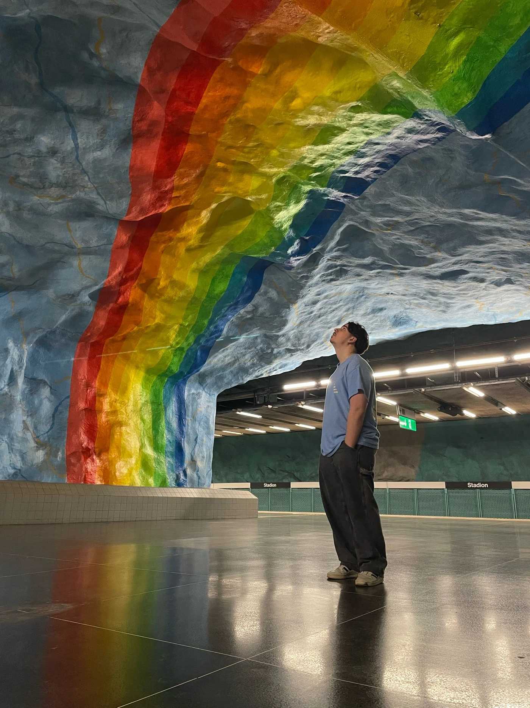
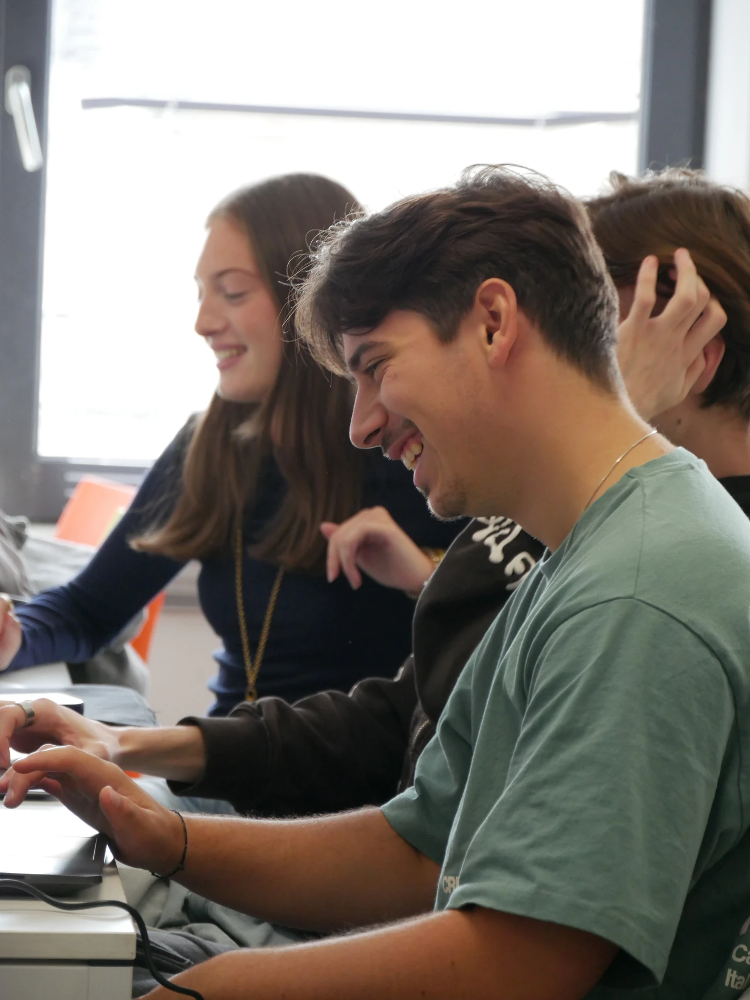
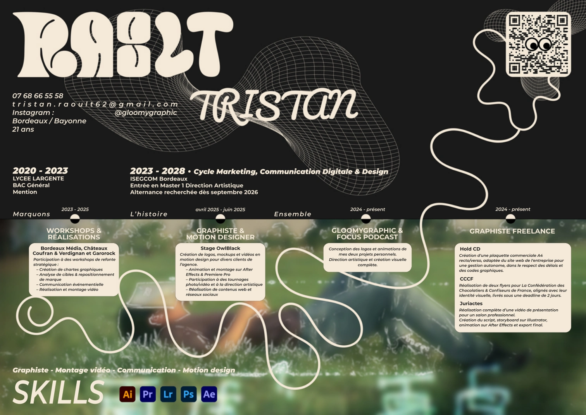
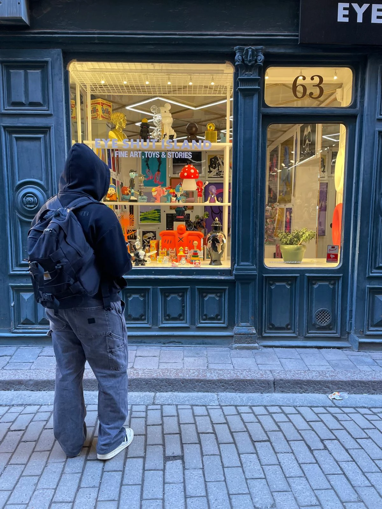
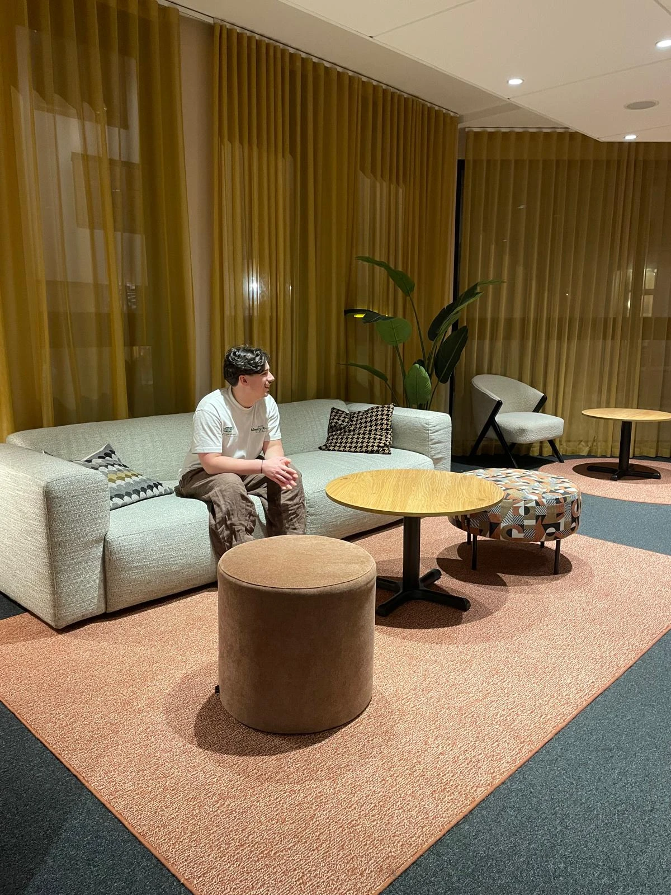
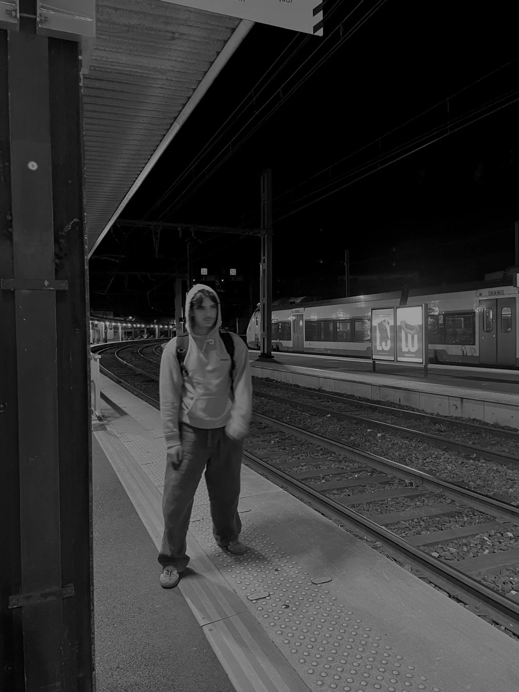

Sup de Pub Bordeaux.
M1 Direction artistique / Design graphique.
Actuellement en recherche d’alternance.
À PROPOS / BORDEAUX


Direction artistique
Design graphique


01 / LE REGARD
Je suis Tristan, étudiant en M1 Direction artistique / Design graphique à Sup de Pub Bordeaux. Je crée des identités visuelles, du packaging et du motion design.
J’aime les projets où on fait les choses sérieusement sans en faire trop. Logo, affiches, vidéo, photo : les formats changent, mais le fil conducteur reste la cohérence visuelle et l’envie de créer quelque chose de mémorable.
Une approche artisanale : chaque projet part d’une idée simple et se construit à la main.
02 / LE FIL SUR PAPIER
Le document à l’origine de cette page.
Mon parcours, dans son format original.

Direction artistique · Design graphique
03 / EN CONSTRUCTION
M1 Direction artistique / Design graphique.
Actuellement en recherche d’alternance.
Marketing, Communication Digitale & Design.
Avant cela : baccalauréat général au lycée Largente, 2020–2023.
Logos, mockups, motion design et contenus web & réseaux sociaux. Une expérience qui relie la conception graphique aux tournages photo et vidéo.
Les projets de stage ↗Gloomy Graphic, Focus et des missions freelance : construire des univers personnels, mais aussi répondre à des demandes concrètes, comme les supports de communication de HoldCD et de CCCF.
Bordeaux Média, Châteaux Coufran & Verdignan, Garorock : chartes graphiques, repositionnement, communication événementielle et réalisation vidéo.
Les projets de formation ↗04 / AILLEURS AUSSI
Des images, des signes, des lieux.
Ce qui attire l’œil, en dehors de l’écran.



05 / LA PRATIQUE
Penser un univers, trouver sa forme, puis le faire vivre sur les bons supports.
Logo, composition, typographie, packaging et applications graphiques.
Storyboard, motion design, captation et montage vidéo.
Photographie, retouche et cohérence visuelle.
MES OUTILS
Illustrator · Photoshop · After Effects
Premiere Pro · Lightroom
06 / LA SUITE
M1 Direction artistique / Design graphique
Sup de Pub Bordeaux · Recherche d’alternance